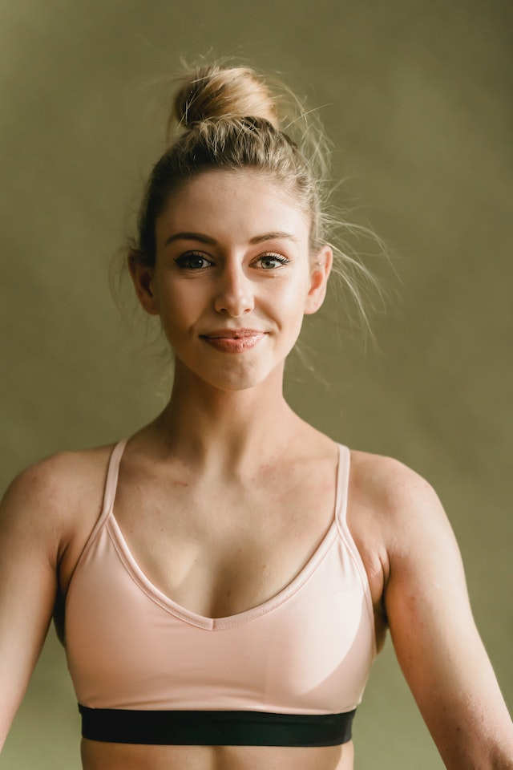

Amanda Green has over 15 years of personal yoga practice, 3,000+ teaching hours and more than 1,800 hours of yoga training.I teach yoga and meditation classes in Bali, Indonesa, Uluwatu, ranging from beginner and gentle to more active classes. My teaching draws on several types of yoga, including a dynamic style that uses movement and breath to help students find stillness and focus.
Johanaa is a passionate yoga teacher with over 3+ years of professional experience in designing and leading flow and vinyasa yoga classes. In June 2018, completed an Advanced 300-Hour Yoga Teacher Training in Bali, Indonesia, and acquired an in-depth knowledge about postures, breathing techniques, and spiritual elements of yoga teaching. Eager to share my expertise and passion with students at Serenity Yoga Studio.
Alicia discovered yoga as a teenager. Little did she know years down the road it would turn into something so much more. She soon finished her 200hr Yoga teacher training and, still wanting more continued on to her 300 YTT , Alicia is always looking to expand her knowledge of yoga and movement, and it shows in her teaching styles as well, if she's learning something new, she will share it with you too!